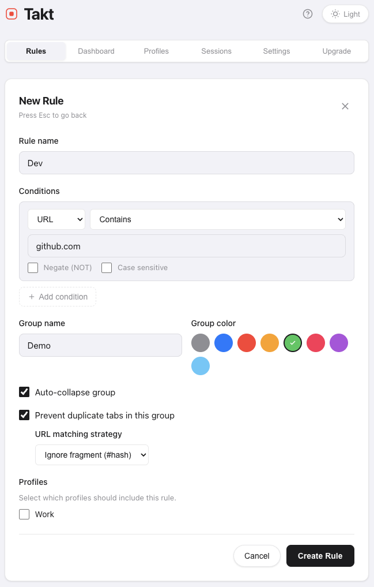
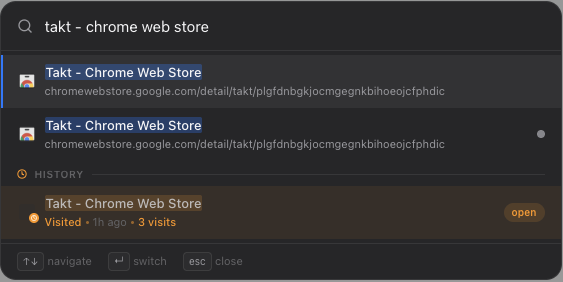
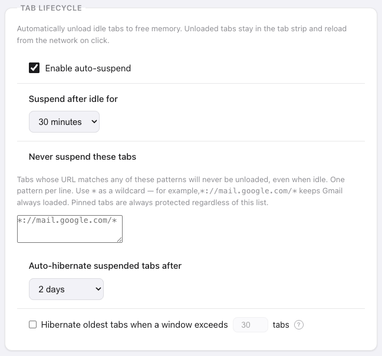

Open a few tabs for a task. Open more for a second task. At the end of the day, you have 90 tabs across two windows and no idea which one has the doc you were reading an hour ago.
The tab bar is useless at that count: titles are truncated to a favicon, scrolling through them is slower than searching your history. Chrome's built-in tab search is several clicks away and doesn't solve the real issue: nothing is organized.
I built Takt to fix this. It's a Chrome extension that auto-groups tabs by URL rules, finds any tab with a keyboard shortcut, and hibernates the ones you forgot about. Here's how it works in practice.
Manual grouping doesn't last
Having 90 tabs open is fine. Having 90 tabs in a flat, unsorted list is not.
Chrome's native tab groups help, but creating them manually isn't sustained in the long run. You group a few tabs, forget for an hour, and the next 20 tabs land outside every group.
The fix is making grouping automatic. Instead of dragging tabs into groups after the fact, you define rules once and let every new tab sort itself.
Create a rule in Takt, tabs sort themselves
Open the Takt popup, go on the rules section, click "Manage rules" and then press "+ New rule" button. Three fields:
- Rule name — what the tab group will be labeled: "Dev."
- Conditions — the URL to match. For domain matching, just enter
github.com. - Group name — what group will the rule belong to.
- Color — pick from Chrome's eight group colors.
- Auto-collapse group - select to auto-collapse a group when creating it.
- Prevent duplicate tabs in this group - well, the name speaks for itself :).

Save. Every open GitHub tab moves into a green "Dev" group immediately. Every future GitHub tab you open — today, tomorrow, next week — lands there automatically. No dragging, no right-clicking, no remembering.
A one-time definition for sustained efficiency gains.
What a practical setup looks like
Most people's tab habits fall into four or five buckets. Here's a setup that takes about a minute:
- Dev (green) — github.com, gitlab.com, stackoverflow.com
- Comms (yellow) — Slack, Gmail, Calendar
- Entertainment (blue) — Spotify, YouTube, YouTube Music
- Social (purple) — linkedin.com, facebook.com, x.com, reddit.com
Four rules. Your tab bar goes from 90 grey favicons to four color-coded groups. Click "Group All" in the Takt popup and every open tab that matches a rule sorts itself in one pass.
Find any tab with Alt+Shift+Space
Organization is half the problem. The other half is retrieval: jumping to a specific tab fast.
Press Alt+Shift+Space anywhere in Chrome. Takt opens a fuzzy-search overlay — type a few letters of any tab's title or URL and jump directly to it. No scrolling, no group scanning, no mouse.

The search covers all open tabs, your browsing history, and hibernated tabs. At 90+ tabs, this is consistently faster than any visual scan.
Reclaim memory from forgotten tabs
Tabs you forgot about still consume memory. A browser with 60 tabs can easily use 4-6 GB of RAM, and most of it goes to tabs you haven't looked at in hours.
Takt's hibernation closes idle tabs while preserving their state — URL, title, group, scroll position. Memory is reclaimed the moment the tab closes. Wake any tab with one click and it returns exactly where you left it.
Set an idle threshold and Takt hibernates tabs automatically. Your active workspace stays lean. Your idle tabs aren't costing you anything.

The result
One minute of setup. Zero minutes of ongoing maintenance. Your tab bar is color-coded by context, any tab is a few keystrokes away, and idle tabs are asleep instead of eating RAM.
The problem was never having too many tabs. It was the lack of structure.
Add Takt to Chrome — it's free, no account needed. Nothing leaves your browser.